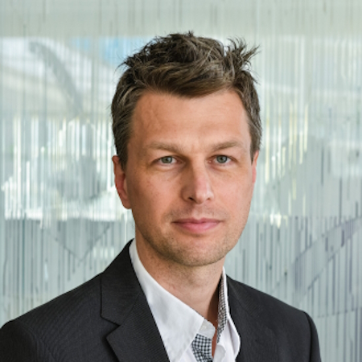

Действующие прикладные системы, соединяющие клинические стандарты психотерапии и передовые архитектуры ИИ:
Цифровое рабочее место школьного психолога и социального педагога. Автоматизация протоколов, локальное шифрование данных, триаж рисков и доказательные маршруты помощи.
Профессиональная среда для частнопрактикующих психологов и клиник: когнитивные графы консультаций, супервизия сессий в реальном времени, соответствие КПТ-протоколам.
Микроинтервенции для подростков и родителей. Строгие этические ограничения, поддержка эмпатических границ и превентивная деэскалация кризисных состояний.
Интерактивный симулятор практических консультаций: отработка кейсов на синтетических сценариях и обучение специалистов доказательным методам работы.
Проектирование и запуск цифровой инфраструктуры для специалистов психологической службы, образовательных учреждений и частной практики.
Тысячи часов индивидуального и семейного психологического консультирования подростков и молодых людей: когнитивно-поведенческая терапия, работа с тревожностью, поведенческими нарушениями и школьным стрессом. Практический опыт сформировал глубокое понимание потребностей специалистов на местах.
Популяционные исследования факторов психологического благополучия и рискованного поведения молодежи; стандартизация диагностических методик для школьных служб.
Индивидуальное консультирование студентов, сопровождение адаптации и развитие университетской службы психологической поддержки.
Координация методических стандартов, регламентов качества и систем мониторинга для сети школьных психологических служб РФ.
Психологическое сопровождение одарённых детей и разработка специализированных программ поддержки участников образовательных смен.
Преподавание курса «Психология здоровья: организация профилактических программ» в рамках совместной магистерской программы по общественному здоровью с Yale University (Yale School of Public Health) по гранту NIH Fogarty (No. D43TW001028).
Лонгитюдные исследования в области социологии психического здоровья и рискованного поведения молодежи; проектирование школьных и общинных моделей профилактики.
Координация регионального этапа международного исследовательского проекта ESPAD 2010 (Европейский школьный опрос по психоактивным веществам), результаты опубликованы в Международном отчете ООН/ESPAD 2012.
Специализация: Социология девиантности и психического здоровья.
5-летняя подготовка в области клинической психологии, психологической диагностики и консультирования.
Посвящается памяти моего Учителя — профессора Иосифа Наумовича Гурвича. Настоящий проект стремится быть достойным продолжением его научной школы общественного здоровья.
Сайт памяти И.Н. Гурвича →